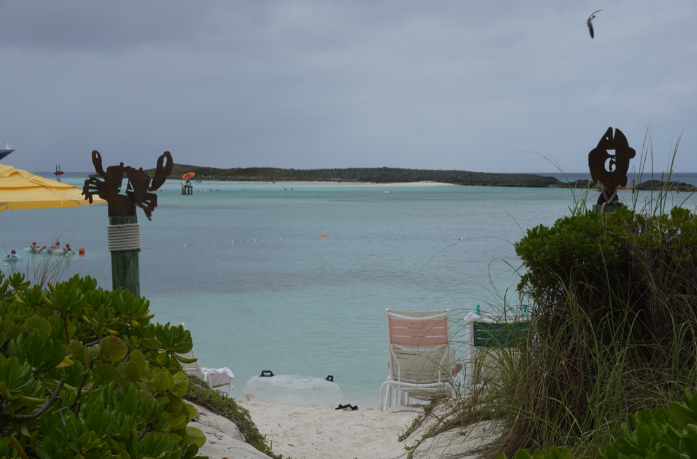

One shoot or a whole batch
Point SISR at one folder that holds a single numbered sequence, or at a parent folder — it walks subfolders and renders each sequence it finds, so you can export many time lapses in one go.

Simple Image Sequence Renderer (SISR) is a free Mac app (and open source tool) for photographers and creators. Download it, pick your folders, and export a finished MP4, MOV, or GIF from numbered stills — with optional date or frame overlays and sizes ready for Instagram, HD, or 4K. Advanced users can also install from source and run SISR from the terminal to automate batches.
On the Releases page, download SISR-macOS.zip (or the macOS build that matches your computer). Unzip and move SISR.app to Applications.
Point SISR at one folder that holds a single numbered sequence, or at a parent folder — it walks subfolders and renders each sequence it finds, so you can export many time lapses in one go.
Valid sequences are turned into video with a clear progress bar. If something is wrong with file names, the app tells you which folder to fix.
Overlay the capture date on each frame — helpful for projects where time matters, such as builds, gardens, or trips — using your camera’s metadata when it is available. Example still →
Export everyday video for the web, a high-quality animated GIF, or professional ProRes in a MOV for further editing — all from one place.
Presets for vertical social (9:16), HD (1080p), and 4K (16:9), with clear choices for what to keep when the photo is taller than the frame. Diagrams · Sample UHD frame →
These are real still frames from SISR — your own photos and settings will vary, but this shows how overlays and crop presets appear on screen.



By default, SISR looks through the folder you choose and all of its subfolders. Every directory that contains images can become its own output file (named after that folder). That means you can select a top-level project folder and render many sequences at once, or select just the folder that holds one numbered sequence if you only want a single video.
The same behavior applies if you use the command line for automation. Details and naming rules are in the user guide.
Most people: use a Mac, download SISR.app from GitHub Releases (button below), open it, choose input and output folders, and click render. No Python or developer tools required.
Advanced: install from source on Windows or Linux, or use the command line to script repeated jobs — see full install and CLI reference in the guide, or the README on GitHub.